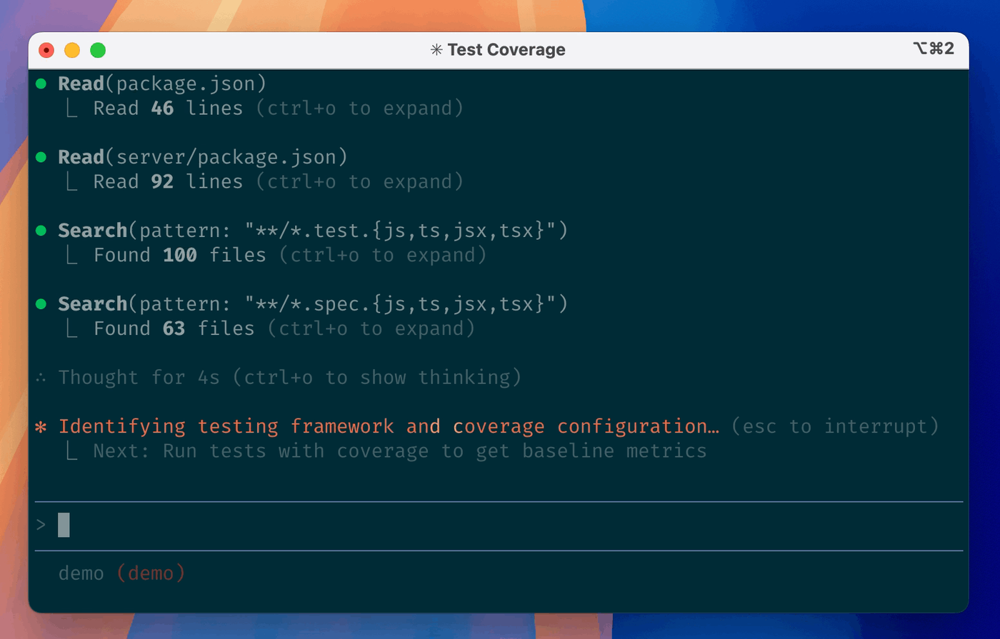

不写代码
也能把 AI 用到专业级
给非计算机专业研究生的 AI 入门：
两个判断标准 · 五个心法 · 一个能真正动手的工具
「会用 AI」不是问一句就复制
打开豆包、Kimi，提一个问题，把答案复制粘贴走人。
让 AI 改改评论、校校错字，就觉得自己"会用 AI"了。
他凭什么判断你"会不会用 AI"
我那天跟我老板做一个深入对话，我说你怎么判断一个人用 AI 用得怎么样 —— 他就看两个。
没有 AI，让你手写一个报告或作品，你能做成什么样？
给你限定一个 AI、限定 token，你又能交出什么作品？
差距不在模型，在你的提问
你用的是 DeepSeek 还是 ChatGPT，远不如你怎么拆解问题重要。
「帮我写个关于台风期货的报告」
→ 得到一个泛泛的模板，还得自己重写。
→ 直接得到能用的初稿。
AI 会把假话说到像真的
你一指出错误，它立刻道歉改口，顺着你说 —— 让你误以为它是对的。
它会"煞有介事"地编造事实、数据和文献出处。
学长写毕业论文时让 AI 找文献依据，AI 的结论是 —— 「中国证券市场是完全有效的市场」。连美国市场都达不到"完全有效"；这句话抄进论文，导师直接判不合格。
喂对格式，又快又准
首行缩进、字号、加粗 —— 这些是给人看的，AI 不需要。
Token 消耗高，层级还识别不准
最省 Token，层级识别最准
让 AI 先了解「你」
现在的大模型知道的是全网公开信息。
但每个人关注的世界、产生的灵感，都是独特的。想让 AI 真的帮上你，得先有属于你的数据库。
用笔记软件写下日记、思考、灵感、小碎念
把笔记之间建立 Link，慢慢长成一张网
让 AI 读你的库，而不是检索全网
从「会聊」到「会干」
- 只在对话框里给你文字
- 复制、粘贴、动手，全是你自己干
- 交付的是「建议」
- 能直接读你电脑里的文件
- 能改文件、整理目录、批量处理表格
- 交付的是「做完的东西」
不写代码，也能让它干活
把几十个乱名文件按主题归类、批量重命名。
合并、清洗多个 Excel / CSV，出汇总表。
一次读十几篇 PDF，输出对比表和综述初稿。
比如你正在看的这份 slides，就是它做的。

站在巨人肩膀上，再改一刀
文科生背景、完全不懂底层代码，用 AI 做了一个 Chrome 插件：查论文时几十个标签页挤在一起 —— 它能按网站归类，一键关掉所有知网页。
直接用她的插件底层逻辑，再按自己的审美和使用习惯，重新定制了界面和设置。
过去是下载了就照着用；现在是按我的需求，改一改。
这周就能做的三件事
今天之后看到的每一篇好文，都丢进同一个笔记里 —— 先攒够 10 条。
挑一件你每周都要做的重复活儿，让 AI 从头做到尾，而不是问一句。
让它帮你整理一个文件夹，体会「AI 说话」和「AI 动手」的区别。
你不需要会写代码。
你需要会提问、会验证、会动手。